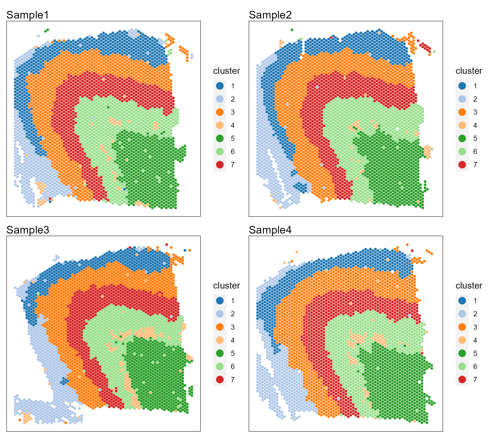
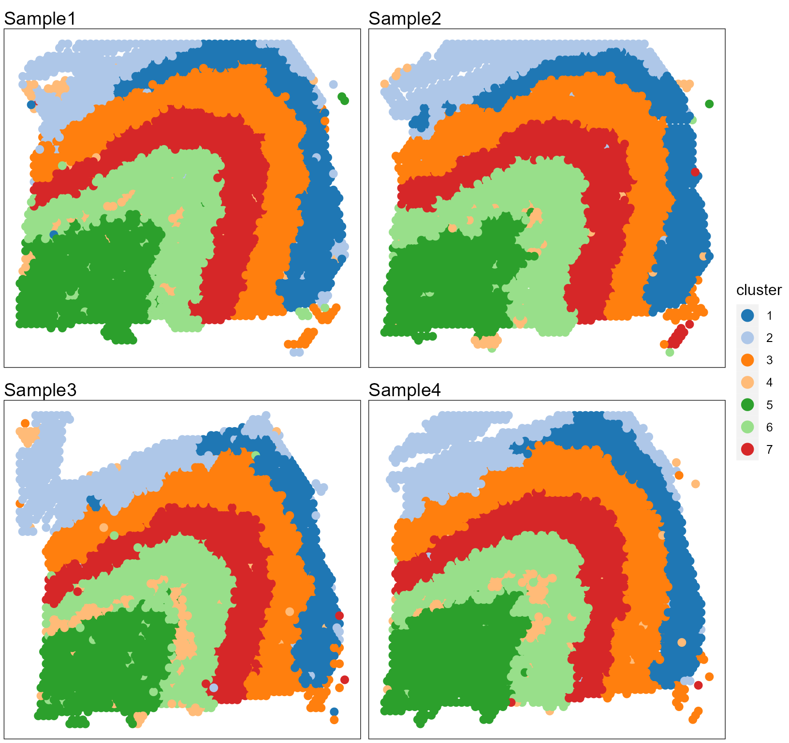
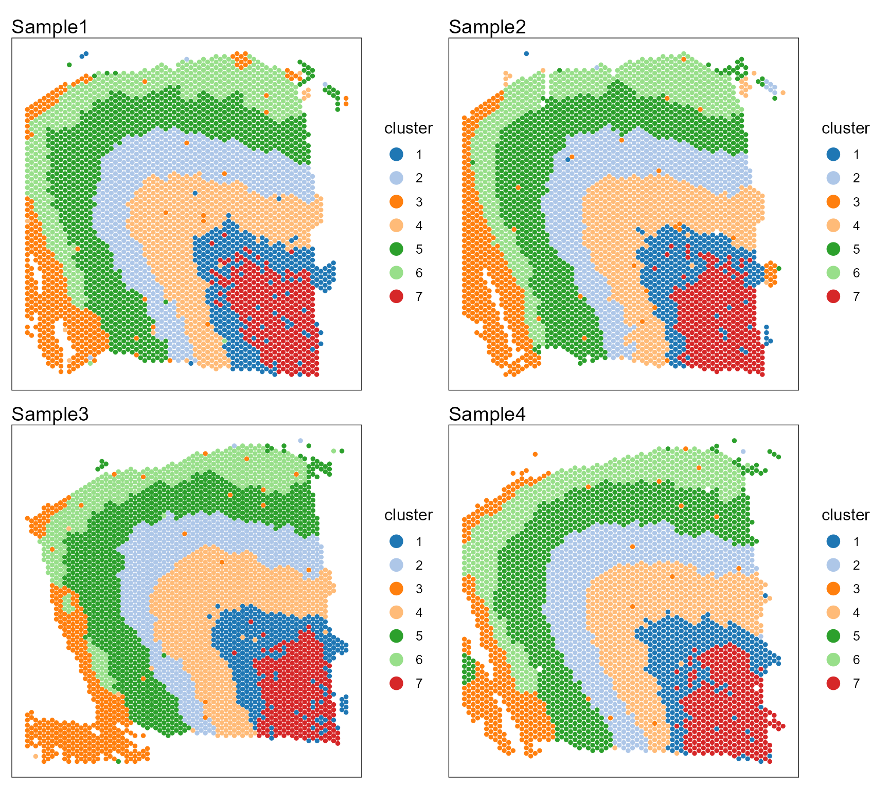
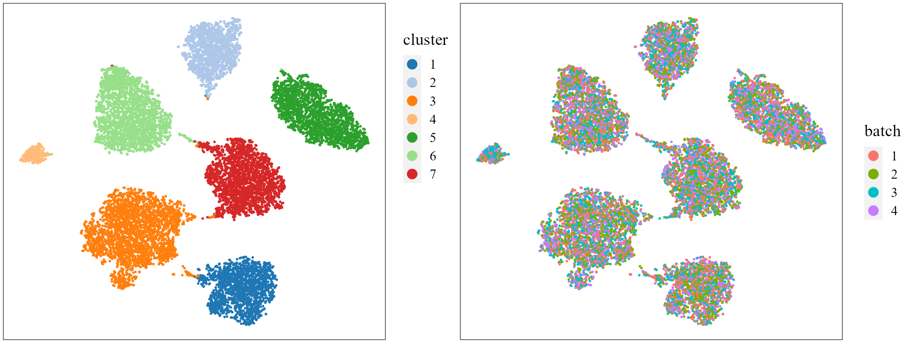
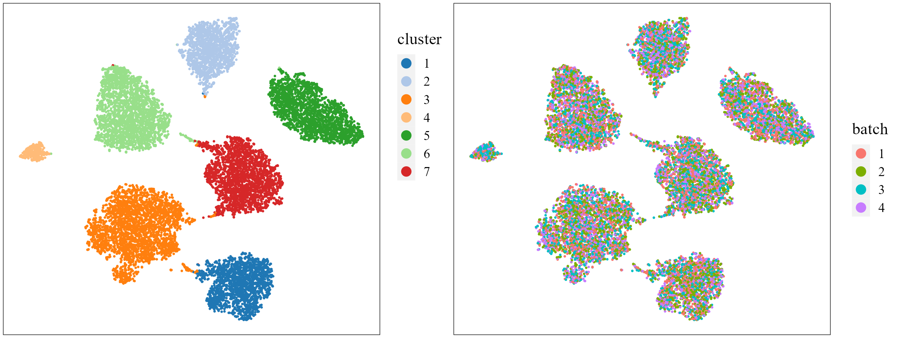

PRECAST: Four DLPFC Sample Analysis
Wei Liu
2023-12-04
Source:vignettes/PRECAST.DLPFC4.Rmd
PRECAST.DLPFC4.RmdThis vignette introduces the PRECAST workflow for the analysis of four spatial transcriptomics datasets. The workflow consists of three steps
- Independent preprocessing and model setting
- Probabilistic embedding and clustering using PRECAST model
- Downstream analysis (i.e. visualization of clusters and embeddings)
We demonstrate the use of PRECAST to four human dorsolateral prefrontal cortex Visium data. Download the data to R
suppressPackageStartupMessages(library(Seurat))
suppressPackageStartupMessages(library(SingleCellExperiment))
name_ID4 <- as.character(c(151673, 151674, 151675, 151676))
### Read data in an online manner
n_ID <- length(name_ID4)
url_brainA <- "https://github.com/feiyoung/DR-SC.Analysis/raw/main/data/DLPFC_data/"
url_brainB <- ".rds"
seuList <- list()
if (!require(FAST)) {
remotes::install_github("feiyoung/FAST")
}
for (i in 1:n_ID) {
# i <- 1
cat("input brain data", i, "\n")
# load and read data
dlpfc <- readRDS(url(paste0(url_brainA, name_ID4[i], url_brainB)))
count <- dlpfc@assays@data$counts
row.names(count) <- FAST::transferGeneNames(row.names(count), species = "Human")
seu1 <- CreateSeuratObject(counts = count, meta.data = as.data.frame(colData(dlpfc)), min.cells = 10,
min.features = 10)
seuList[[i]] <- seu1
}
#> input brain data 1
#> input brain data 2
#> input brain data 3
#> input brain data 4The package can be loaded with the command:
Compare PRECAST with DR-SC in analyzing one sample
First, we view the the spatial transcriptomics data with Visium platform.
seuList ## a list including Seurat objects
#> [[1]]
#> An object of class Seurat
#> 16578 features across 3639 samples within 1 assay
#> Active assay: RNA (16578 features, 0 variable features)
#>
#> [[2]]
#> An object of class Seurat
#> 17332 features across 3673 samples within 1 assay
#> Active assay: RNA (17332 features, 0 variable features)
#>
#> [[3]]
#> An object of class Seurat
#> 16062 features across 3592 samples within 1 assay
#> Active assay: RNA (16062 features, 0 variable features)
#>
#> [[4]]
#> An object of class Seurat
#> 16097 features across 3460 samples within 1 assay
#> Active assay: RNA (16097 features, 0 variable features)check the meta data that must include the spatial coordinates named “row” and “col”, respectively. If the names are not, they are required to rename them.
metadataList <- lapply(seuList, function(x) x@meta.data)
for (r in seq_along(metadataList)) {
meta_data <- metadataList[[r]]
cat(all(c("row", "col") %in% colnames(meta_data)), "\n") ## the names are correct!
}
#> TRUE
#> TRUE
#> TRUE
#> TRUEPrepare the PRECASTObject.
Create a PRECASTObj object to prepare for PRECAST models. Here, we only show the HVGs method to select the 2000 highly variable genes, but users are able to choose more genes or also use the SPARK-X to choose the spatially variable genes.
set.seed(2023)
preobj <- CreatePRECASTObject(seuList = seuList, selectGenesMethod = "HVGs", gene.number = 2000) # Add the model setting
## check the number of genes/features after filtering step
preobj@seulist
#> [[1]]
#> An object of class Seurat
#> 2000 features across 3639 samples within 1 assay
#> Active assay: RNA (2000 features, 1304 variable features)
#>
#> [[2]]
#> An object of class Seurat
#> 2000 features across 3673 samples within 1 assay
#> Active assay: RNA (2000 features, 1296 variable features)
#>
#> [[3]]
#> An object of class Seurat
#> 2000 features across 3592 samples within 1 assay
#> Active assay: RNA (2000 features, 1363 variable features)
#>
#> [[4]]
#> An object of class Seurat
#> 2000 features across 3460 samples within 1 assay
#> Active assay: RNA (2000 features, 1311 variable features)
## Add adjacency matrix list for a PRECASTObj object to prepare for PRECAST model fitting.
PRECASTObj <- AddAdjList(preobj, platform = "Visium")
## Add a model setting in advance for a PRECASTObj object. verbose =TRUE helps outputing the
## information in the algorithm.
PRECASTObj <- AddParSetting(PRECASTObj, Sigma_equal = TRUE, coreNum = 1, maxIter = 30, verbose = TRUE)Fit PRECAST
For function PRECAST, users can specify the number of clusters \(K\) or set K to be an integer vector by using modified BIC(MBIC) to determine \(K\). Here, we use user-specified number of clusters.
### Given K
PRECASTObj <- PRECAST(PRECASTObj, K = 7)
#> fitting ...
#>
|
| | 0%
|
|=================================== | 50%
|
|======================================================================| 100%
#> variable initialize finish!
#> predict Y and V!
#> diff Energy = 5.352642
#> diff Energy = 3.869659
#> Finish ICM step!
#> iter = 2, loglik= -1751519.375000, dloglik=0.999184
#> predict Y and V!
#> diff Energy = 0.199198
#> diff Energy = 18.637697
#> diff Energy = 12.282670
#> Finish ICM step!
#> iter = 3, loglik= -1687532.375000, dloglik=0.036532
#> predict Y and V!
#> diff Energy = 34.223406
#> diff Energy = 23.602364
#> diff Energy = 7.225336
#> diff Energy = 17.366884
#> Finish ICM step!
#> iter = 4, loglik= -1662926.500000, dloglik=0.014581
#> predict Y and V!
#> diff Energy = 9.217014
#> diff Energy = 36.505916
#> diff Energy = 12.640654
#> diff Energy = 7.013317
#> Finish ICM step!
#> iter = 5, loglik= -1651196.250000, dloglik=0.007054
#> predict Y and V!
#> diff Energy = 11.597027
#> diff Energy = 27.970960
#> diff Energy = 27.865365
#> diff Energy = 16.542714
#> Finish ICM step!
#> iter = 6, loglik= -1644952.125000, dloglik=0.003782
#> predict Y and V!
#> diff Energy = 14.099258
#> diff Energy = 6.265841
#> diff Energy = 16.304311
#> diff Energy = 12.900834
#> Finish ICM step!
#> iter = 7, loglik= -1641321.000000, dloglik=0.002207
#> predict Y and V!
#> diff Energy = 14.007410
#> diff Energy = 17.600648
#> diff Energy = 25.950155
#> diff Energy = 19.812621
#> Finish ICM step!
#> iter = 8, loglik= -1639139.875000, dloglik=0.001329
#> predict Y and V!
#> diff Energy = 10.483860
#> diff Energy = 18.725734
#> diff Energy = 9.710191
#> diff Energy = 13.309923
#> Finish ICM step!
#> iter = 9, loglik= -1637770.375000, dloglik=0.000835
#> predict Y and V!
#> diff Energy = 11.523672
#> diff Energy = 15.130851
#> diff Energy = 6.538038
#> diff Energy = 0.074181
#> Finish ICM step!
#> iter = 10, loglik= -1636871.000000, dloglik=0.000549
#> predict Y and V!
#> diff Energy = 8.364143
#> diff Energy = 21.631868
#> diff Energy = 6.242281
#> diff Energy = 6.729873
#> Finish ICM step!
#> iter = 11, loglik= -1636283.250000, dloglik=0.000359
#> predict Y and V!
#> diff Energy = 0.927025
#> diff Energy = 15.350188
#> diff Energy = 11.847601
#> diff Energy = 3.148637
#> Finish ICM step!
#> iter = 12, loglik= -1635864.250000, dloglik=0.000256
#> predict Y and V!
#> diff Energy = 1.586123
#> diff Energy = 15.749150
#> diff Energy = 0.509640
#> diff Energy = 3.230909
#> Finish ICM step!
#> iter = 13, loglik= -1635580.375000, dloglik=0.000174
#> predict Y and V!
#> diff Energy = 3.843540
#> diff Energy = 16.159437
#> diff Energy = 1.552089
#> diff Energy = 9.823270
#> Finish ICM step!
#> iter = 14, loglik= -1635368.500000, dloglik=0.000130
#> predict Y and V!
#> diff Energy = 4.408342
#> diff Energy = 5.844825
#> diff Energy = 0.815869
#> diff Energy = 6.127618
#> Finish ICM step!
#> iter = 15, loglik= -1635197.375000, dloglik=0.000105
#> predict Y and V!
#> diff Energy = 0.780338
#> diff Energy = 8.164158
#> diff Energy = 6.340349
#> diff Energy = 3.846594
#> Finish ICM step!
#> iter = 16, loglik= -1635056.875000, dloglik=0.000086
#> predict Y and V!
#> diff Energy = 2.431712
#> diff Energy = 7.563790
#> diff Energy = 2.636661
#> diff Energy = 4.795888
#> Finish ICM step!
#> iter = 17, loglik= -1634961.250000, dloglik=0.000058
#> predict Y and V!
#> diff Energy = 2.976474
#> diff Energy = 6.393884
#> diff Energy = 7.891301
#> diff Energy = 3.367600
#> Finish ICM step!
#> iter = 18, loglik= -1634876.875000, dloglik=0.000052
#> predict Y and V!
#> diff Energy = 2.636386
#> diff Energy = 5.855440
#> diff Energy = 0.534479
#> diff Energy = 2.063849
#> Finish ICM step!
#> iter = 19, loglik= -1634818.750000, dloglik=0.000036
#> predict Y and V!
#> diff Energy = 3.368599
#> diff Energy = 5.959762
#> diff Energy = 10.145140
#> diff Energy = 4.577272
#> Finish ICM step!
#> iter = 20, loglik= -1634758.625000, dloglik=0.000037
#> predict Y and V!
#> diff Energy = 3.075098
#> diff Energy = 6.025854
#> diff Energy = 2.577874
#> diff Energy = 4.456743
#> Finish ICM step!
#> iter = 21, loglik= -1634704.750000, dloglik=0.000033
#> predict Y and V!
#> diff Energy = 0.851936
#> diff Energy = 3.680762
#> diff Energy = 5.000007
#> diff Energy = 4.430635
#> Finish ICM step!
#> iter = 22, loglik= -1634682.625000, dloglik=0.000014
#> predict Y and V!
#> diff Energy = 3.930192
#> diff Energy = 4.606272
#> diff Energy = 3.037536
#> diff Energy = 1.915371
#> Finish ICM step!
#> iter = 23, loglik= -1634640.000000, dloglik=0.000026
#> predict Y and V!
#> diff Energy = 1.289436
#> diff Energy = 4.483134
#> diff Energy = 4.826944
#> diff Energy = 4.437447
#> Finish ICM step!
#> iter = 24, loglik= -1634615.125000, dloglik=0.000015
#> predict Y and V!
#> diff Energy = 1.368741
#> diff Energy = 1.629112
#> diff Energy = 3.685341
#> diff Energy = 4.444629
#> Finish ICM step!
#> iter = 25, loglik= -1634594.125000, dloglik=0.000013
#> predict Y and V!
#> diff Energy = 1.994114
#> diff Energy = 2.870984
#> diff Energy = 1.030904
#> diff Energy = 4.451361
#> Finish ICM step!
#> iter = 26, loglik= -1634549.125000, dloglik=0.000028
#> predict Y and V!
#> diff Energy = 0.478093
#> diff Energy = 3.148266
#> diff Energy = 4.119249
#> diff Energy = 7.650194
#> Finish ICM step!Use the function SelectModel() to re-organize the fitted results in PRECASTObj.
## backup the fitting results in resList
resList <- PRECASTObj@resList
PRECASTObj <- SelectModel(PRECASTObj)
ari_precast <- sapply(1:length(seuList), function(r) mclust::adjustedRandIndex(PRECASTObj@resList$cluster[[r]],
PRECASTObj@seulist[[r]]$layer_guess_reordered))
mat <- matrix(round(ari_precast, 2), nrow = 1)
colnames(mat) <- name_ID4
DT::datatable(mat)Other options
Users are also able to set multiple K, then choose the best one
PRECASTObj2 <- AddParSetting(PRECASTObj, Sigma_equal = FALSE, coreNum = 4, maxIter = 30, verbose = TRUE) # set 4 cores to run in parallel.
PRECASTObj2 <- PRECAST(PRECASTObj2, K = 5:8)
## backup the fitting results in resList
resList2 <- PRECASTObj2@resList
PRECASTObj2 <- SelectModel(PRECASTObj2)Besides, user can also use different initialization method by setting int.model, for example, set int.model=NULL; see the functions AddParSetting() and model_set() for more details.
Integration and Visualization
Integrate the samples by the function IntegrateSpaData.
seuInt <- IntegrateSpaData(PRECASTObj, species = "Human")
seuInt
#> An object of class Seurat
#> 2000 features across 14364 samples within 1 assay
#> Active assay: PRE_CAST (2000 features, 0 variable features)
#> 2 dimensional reductions calculated: PRECAST, position
## The low-dimensional embeddings obtained by PRECAST are saved in PRECAST reduction slot.First, user can choose a beautiful color schema using chooseColors().
cols_cluster <- chooseColors(palettes_name = "Classic 20", n_colors = 7, plot_colors = TRUE)
Show the spatial scatter plot for clusters
p12 <- SpaPlot(seuInt, item = "cluster", batch = NULL, point_size = 1, cols = cols_cluster, combine = TRUE,
nrow.legend = 7)
p12
# users can plot each sample by setting combine=FALSEUsers can re-plot the above figures for specific need by returning a ggplot list object. For example, we plot the spatial heatmap using a common legend.
library(ggplot2)
pList <- SpaPlot(seuInt, item = "cluster", batch = NULL, point_size = 2.5, cols = cols_cluster,
combine = FALSE, nrow.legend = 7)
pList <- lapply(pList, function(x) x + coord_flip() + scale_x_reverse())
drawFigs(pList, layout.dim = c(2, 2), common.legend = TRUE, legend.position = "right", align = "hv")
Show the spatial UMAP/tNSE RGB plot to illustrate the performance in extracting features.
seuInt <- AddUMAP(seuInt)
p13List <- SpaPlot(seuInt, batch = NULL, item = "RGB_UMAP", point_size = 2, combine = FALSE, text_size = 15)
p13List <- lapply(p13List, function(x) x + coord_flip() + scale_x_reverse())
drawFigs(p13List, layout.dim = c(2, 2), common.legend = TRUE, legend.position = "right", align = "hv")
# seuInt <- AddTSNE(seuInt) SpaPlot(seuInt, batch=NULL,item='RGB_TSNE',point_size=2,
# combine=T, text_size=15)Show the tSNE plot based on the extracted features from PRECAST to check the performance of integration.
seuInt <- AddTSNE(seuInt, n_comp = 2)
p1 <- dimPlot(seuInt, item = "cluster", point_size = 0.5, font_family = "serif", cols = cols_cluster,
border_col = "gray10", nrow.legend = 14, legend_pos = "right") # Times New Roman
p2 <- dimPlot(seuInt, item = "batch", point_size = 0.5, font_family = "serif", legend_pos = "right")
drawFigs(list(p1, p2), layout.dim = c(1, 2), legend.position = "right", align = "hv")
Combined differential expression analysis
library(Seurat)
dat_deg <- FindAllMarkers(seuInt)
library(dplyr)
n <- 5
dat_deg %>%
group_by(cluster) %>%
top_n(n = n, wt = avg_log2FC) -> top10Plot DE genes’ heatmap for each spatial domain identified by PRECAST.
library(ggplot2)
## HeatMap
p1 <- DotPlot(seuInt, features = unique(top10$gene), col.min = 0, col.max = 1) + theme(axis.text.x = element_text(angle = 45,
hjust = 1, size = 8))
p1
Session Info
sessionInfo()
#> R version 4.1.2 (2021-11-01)
#> Platform: x86_64-w64-mingw32/x64 (64-bit)
#> Running under: Windows 10 x64 (build 22621)
#>
#> Matrix products: default
#>
#> locale:
#> [1] LC_COLLATE=Chinese (Simplified)_China.936
#> [2] LC_CTYPE=Chinese (Simplified)_China.936
#> [3] LC_MONETARY=Chinese (Simplified)_China.936
#> [4] LC_NUMERIC=C
#> [5] LC_TIME=Chinese (Simplified)_China.936
#>
#> attached base packages:
#> [1] parallel stats4 stats graphics grDevices utils datasets
#> [8] methods base
#>
#> other attached packages:
#> [1] dplyr_1.0.9 ggplot2_3.4.1
#> [3] PRECAST_1.6.2 FAST_1.2
#> [5] gtools_3.9.2.2 SingleCellExperiment_1.16.0
#> [7] SummarizedExperiment_1.24.0 Biobase_2.54.0
#> [9] GenomicRanges_1.46.1 GenomeInfoDb_1.30.1
#> [11] IRanges_2.28.0 S4Vectors_0.32.3
#> [13] BiocGenerics_0.40.0 MatrixGenerics_1.6.0
#> [15] matrixStats_0.62.0 sp_1.5-0
#> [17] SeuratObject_4.1.0 Seurat_4.1.1
#>
#> loaded via a namespace (and not attached):
#> [1] rappdirs_0.3.3 scattermore_0.8
#> [3] ggthemes_4.2.4 GiRaF_1.0.1
#> [5] ragg_1.2.2 tidyr_1.2.0
#> [7] bit64_4.0.5 knitr_1.37
#> [9] irlba_2.3.5 DelayedArray_0.20.0
#> [11] data.table_1.14.2 rpart_4.1.16
#> [13] KEGGREST_1.34.0 RCurl_1.98-1.6
#> [15] generics_0.1.2 org.Mm.eg.db_3.14.0
#> [17] ScaledMatrix_1.2.0 cowplot_1.1.1
#> [19] RSQLite_2.2.10 RANN_2.6.1
#> [21] future_1.26.1 bit_4.0.4
#> [23] spatstat.data_3.0-0 xml2_1.3.3
#> [25] httpuv_1.6.5 assertthat_0.2.1
#> [27] viridis_0.6.2 xfun_0.29
#> [29] hms_1.1.1 jquerylib_0.1.4
#> [31] evaluate_0.15 promises_1.2.0.1
#> [33] fansi_1.0.4 progress_1.2.2
#> [35] dbplyr_2.1.1 igraph_1.3.5
#> [37] DBI_1.1.2 htmlwidgets_1.5.4
#> [39] spatstat.geom_2.4-0 purrr_0.3.4
#> [41] ellipsis_0.3.2 RSpectra_0.16-1
#> [43] crosstalk_1.2.0 ggpubr_0.4.0
#> [45] backports_1.4.1 DR.SC_3.4
#> [47] insight_0.17.0 biomaRt_2.50.3
#> [49] deldir_1.0-6 sparseMatrixStats_1.6.0
#> [51] vctrs_0.6.1 ROCR_1.0-11
#> [53] abind_1.4-5 withr_2.5.0
#> [55] cachem_1.0.6 progressr_0.10.1
#> [57] sctransform_0.3.3 prettyunits_1.1.1
#> [59] mclust_5.4.10 goftest_1.2-3
#> [61] cluster_2.1.2 lazyeval_0.2.2
#> [63] crayon_1.5.1 labeling_0.4.2
#> [65] pkgconfig_2.0.3 nlme_3.1-155
#> [67] vipor_0.4.5 nnet_7.3-17
#> [69] rlang_1.1.0 globals_0.15.0
#> [71] lifecycle_1.0.3 miniUI_0.1.1.1
#> [73] filelock_1.0.2 BiocFileCache_2.2.1
#> [75] rsvd_1.0.5 rprojroot_2.0.3
#> [77] polyclip_1.10-0 lmtest_0.9-40
#> [79] Matrix_1.4-0 carData_3.0-5
#> [81] zoo_1.8-10 beeswarm_0.4.0
#> [83] ggridges_0.5.3 png_0.1-7
#> [85] viridisLite_0.4.1 bitops_1.0-7
#> [87] KernSmooth_2.23-20 Biostrings_2.62.0
#> [89] blob_1.2.2 DelayedMatrixStats_1.16.0
#> [91] stringr_1.4.0 parallelly_1.32.0
#> [93] spatstat.random_2.2-0 rstatix_0.7.0
#> [95] ggsignif_0.6.3 beachmat_2.10.0
#> [97] scales_1.2.1 memoise_2.0.1
#> [99] magrittr_2.0.3 plyr_1.8.7
#> [101] ica_1.0-2 zlibbioc_1.40.0
#> [103] compiler_4.1.2 RColorBrewer_1.1-3
#> [105] fitdistrplus_1.1-8 cli_3.2.0
#> [107] XVector_0.34.0 listenv_0.8.0
#> [109] patchwork_1.1.1 pbapply_1.5-0
#> [111] formatR_1.11 MASS_7.3-55
#> [113] mgcv_1.8-39 tidyselect_1.1.2
#> [115] stringi_1.7.6 textshaping_0.3.6
#> [117] highr_0.9 yaml_2.3.6
#> [119] BiocSingular_1.10.0 ggrepel_0.9.1
#> [121] grid_4.1.2 sass_0.4.1
#> [123] tools_4.1.2 future.apply_1.9.0
#> [125] rstudioapi_0.13 gridExtra_2.3
#> [127] farver_2.1.1 Rtsne_0.16
#> [129] digest_0.6.29 rgeos_0.5-9
#> [131] shiny_1.7.1 Rcpp_1.0.10
#> [133] car_3.0-12 broom_0.7.12
#> [135] scuttle_1.4.0 performance_0.8.0
#> [137] later_1.3.0 harmony_0.1.0
#> [139] RcppAnnoy_0.0.19 org.Hs.eg.db_3.14.0
#> [141] httr_1.4.3 AnnotationDbi_1.56.2
#> [143] colorspace_2.1-0 XML_3.99-0.9
#> [145] fs_1.5.2 tensor_1.5
#> [147] reticulate_1.25 splines_4.1.2
#> [149] uwot_0.1.11 spatstat.utils_3.0-1
#> [151] pkgdown_2.0.6 scater_1.25.1
#> [153] plotly_4.10.0 systemfonts_1.0.4
#> [155] xtable_1.8-4 jsonlite_1.8.0
#> [157] R6_2.5.1 pillar_1.9.0
#> [159] htmltools_0.5.2 mime_0.12
#> [161] glue_1.6.2 fastmap_1.1.0
#> [163] DT_0.21 BiocParallel_1.28.3
#> [165] BiocNeighbors_1.12.0 codetools_0.2-18
#> [167] utf8_1.2.3 lattice_0.20-45
#> [169] bslib_0.3.1 spatstat.sparse_2.1-1
#> [171] tibble_3.2.1 curl_4.3.2
#> [173] ggbeeswarm_0.6.0 leiden_0.4.2
#> [175] limma_3.50.1 survival_3.2-13
#> [177] CompQuadForm_1.4.3 rmarkdown_2.11
#> [179] desc_1.4.0 munsell_0.5.0
#> [181] GenomeInfoDbData_1.2.7 reshape2_1.4.4
#> [183] gtable_0.3.3 spatstat.core_2.4-4